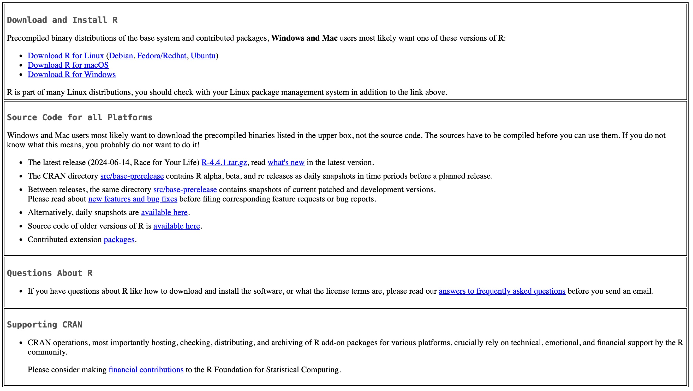

Male | Female | |||
|---|---|---|---|---|
Cancer Sites | % | 1 in | % | 1 in |
Any cancer | 41.6 | 2 | 39.6 | 3 |
Prostate | 12.9 | 8 | ||
Lung and bronchus | 6.3 | 16 | 5.9 | 17 |
Colon and rectum | 4.3 | 23 | 3.9 | 25 |
Bladder (includes in situ) | 3.6 | 28 | 1.1 | 89 |
Melanoma of the skin* | 3.6 | 28 | 2.5 | 41 |
Breast | 0.1 | 726 | 13.0 | 8 |
Non-Hodgkin lymphoma | 2.4 | 42 | 1.9 | 52 |
Kidney and renal pelvis | 2.3 | 43 | 1.4 | 73 |
Leukemia | 1.9 | 53 | 1.3 | 75 |
Pancreas | 1.7 | 58 | 1.7 | 60 |
Liver and bile duct | 1.5 | 65 | 0.7 | 143 |
Data preparation and lifetime risk estimation using R
Report cancer registration data using a developed R package canregtools
Qiong Chen Ph.D
Henan Cancer Center/Henan Cancer Hospital
Monday Nov 4, 2024(Beijing)
Concept of risk
Contents
Concept of risk
Practice of estimation of lifetime risk using R package ltRISK
What is cancer risk ?
Lifetime risk
A measure of the risk that a certain event will happen during a person’s lifetime. In cancer research, it is usually given as the likelihood that a person who is free of a certain type of cancer will develop or die from that type of cancer during his or her lifetime.
Estimates of lifetime risk usually expressed as a percentage or as odds
- Percentage, eg.the risk that a man will develop cancer of the pancreas during his lifetime is 1.7%.
- Odds, 1 out of every 58 (100/1.7) men will develop pancreatic cancer during his lifetime.
Lifetime cancer risk
The lifetime risk of developing or dying from cancer refers to the chance a person has, over the course of their lifetime (from birth to death), of being diagnosed with or dying from cancer (Table 1).
Measures estimate lifetime cancer risk
- Cumulative rate
- Cumulative risk
- Current Probability
- Devcan
- AMP method
Cumulative rate
\[ \text{Cumrate} = \sum_{i=1}^{A} w_i p_i \]
- A is upper age-band limit for summation.
- \(w_i\) is the width of the ith age band in years.
- \(p_i\) is the age-specific annual incidence rate in the ith age-band.
Cumulative risk
The cumulative rate can be converted into true cumulative risk using the following formula:
\[ \text{Cumrisk} = 1 - e^{\text{-cumrate}} \]
Current probability
Devcan method
The AMP method
AMP (Adjusted for Multiple Primaries) method can address the issue of multiple primary tumors in the same perions for registries can’t precisely identify them or for the situtation that individual data was not available.
- Multiple primaries cancer can’t precisely identified
- Individual cancer cases not available
- Smaller than estimate value using ‘current probability’
The AMP method
\[ S = \sum_{i=1}^{f} \frac{R_i}{R_i + M_i - D_i} \hat{S}^*_0(a_i) \times \left\{ 1 - \exp \left( \frac{-w_i}{N_i} (R_i + M_i - D_i) \right) \right\} \]
- S denotes the probability of being diagnosed with cancer;
- M_i denote the annual number of deaths (all-cause mortality);
- D_i denote the annual number of cancer deaths (cancer mortality);
- R_i denote the annual number of (registered) cancer cases;
- N_i denote the size of the mid-year population;
- w_i denote the width of age band i.
- \(\hat{S}^*_0(a_i)\) denotes the probability of being alive and cancer free at age ai;
The AMP method
Estimation of \(\hat{S}^*_0(a_i)\)
\[ \hat{S}^*_0(a_i) = \exp \left[ -\sum_{j=1}^{i-1} \frac{R_j + (M_j - D_j)}{N_j} \right] \]
Practice of estimation of lifetime risk using R package ltRISK
Contents
Concept of risk
Practice of estimation of lifetime risk using R package ltRISK
Software requirements
- Downlaod and install latest R (Rhttps://cloud.r-project.org)
- Download and install latest Rstudio(https://posit.co/download/rstudio-desktop/)

How to install ltRISK
We include the method AMP in R package ltRISK
We can install it from github repository
or install it from local source file ltRISK_0.1.0.tar.gz
Example data from GCO
Calculate the cumulate rate and cumulate risk
library(ltRISK)
pop <- c(20005, 86920, 102502, 151494, 182932, 203107, 240289, 247076, 199665,
163820, 145382, 86789, 69368, 51207, 39112, 20509, 12301, 6586, 1909)
inci <- c(156, 58, 47, 49, 48, 68, 120, 162, 160, 294, 417, 522, 546, 628,
891, 831, 926, 731, 269)
mx <- inci / pop
r1 <- cumrate(mx, eage = 70)
r1Cumulative Rate(1/1)
0.49771 Cumulative Rate(1/1)
0.29511 Cumulative Risk (1/100)
39.21 Cumulative Risk (1/100)
25.56 Estimate the lifetime risk using AMP method
library(ltRISK)
ni <- c(
73872987, 82029530, 72267070, 78303514, 99425613, 119915673, 98068725,
96644427, 121225951, 121250720, 96012917, 79863455, 75972753, 52929797,
37551107, 29047207, 19584254, 13854299)
mi <- c(
60594, 17718, 18883, 28127, 37493, 75223, 83574, 100655, 211467, 278913,
419663, 445223, 770865, 929008, 1058922, 1346942, 1576852, 2305312)
di <- c(
3511, 2801, 2553, 3183, 4960, 9456, 13509, 23935, 62386, 111640, 147866,
203955, 301892, 304985, 302785, 323804, 275557, 197614)
ri <- c(
9303, 6887, 6248, 8509, 16961, 39439, 56670, 86535, 189251, 289320, 344395,
411232, 552071, 491213, 433786, 395544, 292672, 173503)Estimate lifetime risk using AMP method
The ltr function can estimate lifetime risk using the AMP method and return an object strore the result which is a list of 4 elements including age groups, age conditional propability, and variance in each agegroup.
Get the estimates and 95% CI
The estimate function can get the estimate value of lifetime risk and its 95%CI from specified agegroup. When a
[1] "26.85(26.70-27.00)"[1] "25.68(25.61-25.75)"[1] "23.80(23.74-23.86)"[1] "19.85(19.81-19.90)"[1] "13.20(13.17-13.23)"Estimation of lifetime risk using R